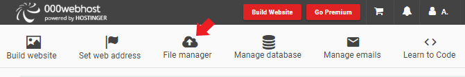
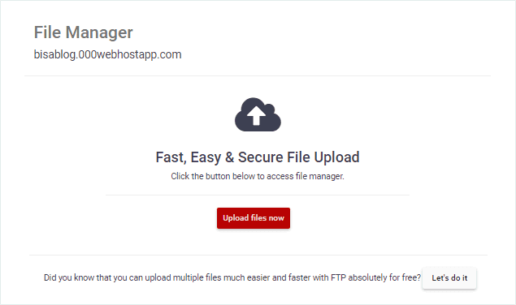
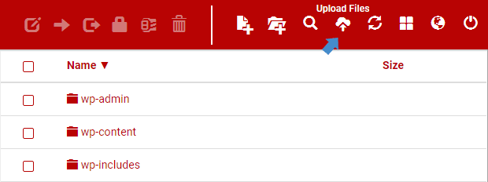

Cara Upload File di 000WebHost
Di 000WebHost, upload file bisa kamu lakukan dalam dua cara. Pertama adalah dengan memakai fitur Web File Manager yang ada di cPanel, atau melalui FTP Client seperti FileZilla. Di antara kedua cara tersebut, upload file di 000WebHost melalui Web File Manager lebih mudah dilakukan, dan kali ini saya akan menggunakannya dalam tutorial kali ini.
Langkah-langkahPada langkah di bawah ini, saya menganggap kamu sudah daftar hosting gratis di 000WebHost dan memasang WordPress. Bila kamu belum melakukannya, silahkan lihat panduan cara dapat hosting gratis 000WebHost terlebih dahulu.
1. Login Ke 000WebHost
2. Setelah masuk ke dasbor admin, cari dan klik menu FILE MANAGER.
3. Jika kamu hanya membuat satu website di 000WebHost, maka kamu akan secara otomatis membuka File Manager untuk website tersebut. Klik tombol UPLOAD FILES NOW.
4. Setelah itu kamu akan dibawa ke laman baru yang berisi direktori website kamu. Di sinilah kamu bisa mengupload file yang kamu butuhkan.
5. Untuk masuk ke dalam sebuah folder, klik dua kali pada folder yang akan kamu akses. Biasanya kamu akan diminta memasukan nama website dan password terlebih dahulu.
6. Untuk mengupload file ke 000WebHost, cari menu UPLOAD FILES pada menu bar di atas dan pilih file yang akan kamu upload.
Satu hal yang harus kamu ketahui, file yang akan kamu upload akan diletakan di folder yang sedang kamu buka. Jadi misalnya ketika kamu berada di folder wp-content, maka file yang diupload akan berada di folder tersebut setelah selesai diunggah. Jika kamu salah meletakan file, gunakan perintah MOVE yang bisa kamu temukan di menu bar pada bagian atas.
Sebagai informasi tambahan, jangan meletakan file upload secara acak (sembarangan). Bila kamu masih belum familiar dengan struktur folder WordPress, berikut adalah beberapa folder yang bisa kamu gunakan untuk file yang kamu unggah.
1. wp-content » plugins – untuk meletakan file plugins
2. wp-content » themes – untuk meletakan file tema
3. wp-content » uploads – untuk meletakan file multimedia
4. public_html – untuk meletakan file verifikasi Google Search Console, Bing Webmaster, Pinterest, dll.